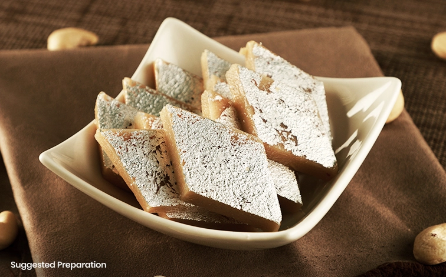
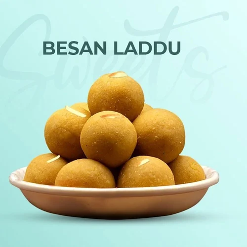

Kaju Barfi
Ingredients
- 250 gms cashew nuts
- 250 gms sugar
- 240 gms milk
- A few silver leaves - for decoration (optional)
Receipe
- Blend cashews and milk in a blender to a fine paste.
- Mix paste and sugar and cook over low heat stirring till the sugar dissolves, then bring to a boil.
- Continue stirring over medium heat, till the mixture leaves the sides of the pan, and becomes a dough like paste.
- Remove from heat and when cool enough to handle, roll it on to a greased surface, with a greased rolling pin (roll before it cools).
- Roll to 1/4cm / 1/8" thickness.
- Now cover with the silver leaf and leave to cool, then cut into diamond shaped pieces.

Besan ke Ladoo
Ingredients
- 2 Cups gram flour
- 1/2 cup ghee
- 3/4 cup sugar, powdered
- 1/4 tsp green cardamom, powdered
- for garnishing almonds, blanched
- for garnishing pistachios, blanched
Receipe
- In a kadahi (wok), melt the ghee and add the gram flour. Stir-fry over low heat. It takes about 30 minutes for the flour to get cooked through and it gets a pasty look when done.
- The color should be a light brown. Shut off the heat and leave the mixture to cool completely. If it does not cool entirely, it becomes moist when sugar is added.
- Add the sugar and cardamom and mix well by rubbing it with your open palm against the base of the bowl. Rub till blended thoroughly.
- Shape into tight, hard balls, pressing hard at every stage. At the final stage, keep it pressed a little longer, so that the surface becomes smooth.
- Decorate the top of each ball with almonds and pistachios. Serve.
- These ladoos can be stored for almost 4-6 weeks in an air tight jar.
